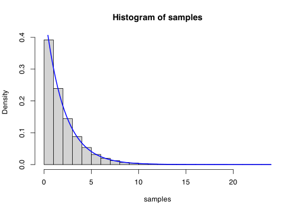
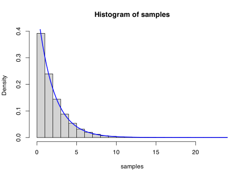
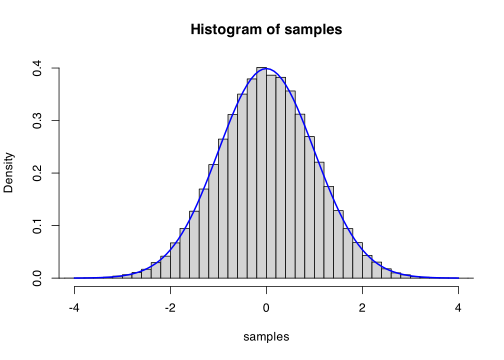

rate <- 0.5
n <- 1e5
unif <- runif(n)
samples <- -(1 / rate) * log(1 - unif)
hist(samples, probability = TRUE)
curve(dexp(x, rate), add = TRUE, col = "blue", lwd = 2)
\[\newcommand{\Exg}{\operatorname{\mathbb{E}}} \newcommand{\Ex}{\mathbb{E}} \newcommand{\Ind}{\mathbb{I}} \newcommand{\Var}{\operatorname{Var}} \newcommand{\Cov}{\operatorname{Cov}} \newcommand{\Corr}{\operatorname{Corr}} \newcommand{\ee}{\mathrm{e}}\]
We have started looking at how to transform a standard uniform random variable \(U \sim \operatorname{U}[0,1]\) into any other distribution \(X\).
Last lecture, we saw how to do this for other uniform distributions and for discrete random variables. Booth involved the cumulative distribution function \(F(x) = \mathbb P(X \leq x)\). For generating a wider class of random variables (including continuous random variables) the CDF will continue to be important. In fact, it is the inverse of the CDF that will play a crucial role.
It seems natural to define the inverse \(F^{-1}\) of the CDF in just the same way we would define the inverse of any other function: that \(F^{-1}(u)\) is the unique value \(x\) such that \(F(x) = u\). This is illustrated in the figure below.
[picture]
This definition works fine for a purely continuous distribution that doesn’t have any “gaps” in the set of values it can take. But for a general random variable, there are two problems with this definition.
If \(X\) has any point masses – points \(x\) with strictly positive probability \(\mathbb P(X = x) > 0\) of hitting that point exactly – then \(F\) may “jump past” the value \(u\), so there is no value \(x\) such that \(F(u)\). (See the blue line on the graph below.)
If there is an interval on the line where \(X\) has probability zero, then all the \(x\)s in that interval have the same value of \(F(x) = u\), so there is no unique value \(x\) such that \(F(x) = u\). (See the red line on the graph below.)
[picture]
It turns out that the best way to solve this is the following. For the first obstacle, if there are many points \(x\) with \(F(x) = u\), we take the first one – that is, the smallest \(x\) with \(F(x) = u\). For the second obstacle, we take the value of the smallest \(x\) where \(F(x)\) is above \(u\), which comes right at the jump. These two cases are illustrated below.
[picture]
These two awkward cases can be encapsulated in the following definition.
Definition 13.1 Let \(X\) be a random variable with cumulative distribution function \(F_X(x) = \mathbb P(X \leq x)\). Then the inverse cumulative distribution function (inverse CDF) \(F_X^{-1}\) is defined for \(u \in (0,1)\) by \[ F^{-1}_X(u) = \min \big \{x : F_X(x) \geq u \big\} . \]
You should check that you agree this definition matches the discussion above.
The inverse transform method works like this: To generate \(X\), simply apply the inverse CDF \(F^{-1}\) to a standard uniform random variable \(U\).
Theorem 13.1 Let \(F\) be a cumulative distribution function, and let \(F^{-1}\) be its inverse. Let \(U \sim \operatorname{U}[0,1]\). Then \(X = F^{-1}(U)\) has cumulative distribution function \(F\).
Proof. We need to show that \(\mathbb P(X \leq x) = F(x)\) when this is in \((0,1)\). The proof is very easy if \(F\) has no “gaps” or “jumps” as described above. Then, we simply have \[ \mathbb P(X \leq x) = \mathbb P\big(F^{-1}(U) \leq x\big) = \mathbb P\big(U \leq F(x)\big) = F(x), \] where we have simply “undone” the function \(F^{-1}\) and used that \(\mathbb P(U \leq u) = u\) for \(u \in (0,1)\).
For the general case, we need to be just a little bit more careful. We have \[ \mathbb P(X \leq x) = \mathbb P\big(F^{-1}(U) \leq x\big) = \mathbb P\big(\min\{y : F(y) \geq U \} \leq x \big) .\] If \(x\) is bigger than the minimum \(y\) with \(F(y) \geq u\), then certainly \(F(x) \geq u\) as well; while if \(F(x) \geq u\), then \(x\) must be at least as big as the minimum \(y\) for which \(F(y) \geq u\). Hence \(\min\{y : F(y) \geq U \} \leq x\) if and only is \(F(x) \geq U\). So \[ \mathbb P(X \leq x) = \mathbb P\big(\min\{y : F(y) \geq U \} \leq x \big) = \mathbb P\big(F(x) \geq U\big) = \mathbb P(U \leq F(x)\big) = F(x), \] as before.
The method – known as the inverse transform method gives a simple way to generate any random variable \(X\) for which the inverse CDF \(F_X^{-1}\) can be computed easily.
This is not all random variables, however. In particular, the inverse CDF of the normal distribution does not have a closed form, so this does not give a way of sampling normal distributions. Later we’ll see other methods that allow us to sample from normal random variables.
Let’s see some examples. The idea for all these problems is “Write \(U = F(X)\), then invert, to get \(X = F^{-1}(U)\).”
Example 13.1 Let \(X \sim \operatorname{Exp}(\lambda)\) be an exponential distribution with rate \(\lambda\). This has PDF \(f(x) = \lambda \ee^{-\lambda x}\) for \(x \geq 0\) and CDF \(F(x) = 1 - \ee^{-\lambda x}\).
We write \(U = F(X)\) and invert it to make \(X\) the subject. So \(U = 1 - \ee^{-\lambda X}\), and therefore \[ X = -\frac{1}{\lambda} \log(1 - U) . \]
We should check that this really does have an exponential distribution.
rate <- 0.5
n <- 1e5
unif <- runif(n)
samples <- -(1 / rate) * log(1 - unif)
hist(samples, probability = TRUE)
curve(dexp(x, rate), add = TRUE, col = "blue", lwd = 2)
Looks like an accurate sample!
Since \(1 - U\) has the same distribution as \(U\), it can be more convenient to simply write \[ X' = -\frac{1}{\lambda} \log U \] instead.
Alternatively, since \(X\) and \(X'\) are not independent and both have the same exponential distribution, they are a candidate to use as an antithetic pair in Monte Carlo estimation.
Example 13.2 Consider \(X\) with PDF \[ f(x) = \frac{x}{\gamma} \,\exp \left(-\frac{x^2}{2\gamma}\right)\] for \(x \geq 0\), and CDF \[ F(x) = 1 - \exp\left(-\frac{x^2}{2\gamma}\right) \] This is known as the Rayleigh distribution with scale parameter \(\gamma\).
Again, we write \(U = F(X)\) and invert. so \[ U = 1 - \exp\left(-\frac{X^2}{2\gamma}\right) \] so \[ X = \sqrt{-2\gamma\log(1-U)} . \]
Again, \(X' = \sqrt{-2\gamma\log U}\) is a slightly simpler expression, or could be used in an antithetic variables Monte Carlo approach.
Example 13.3 Suppose \(X \sim \operatorname{U}[a,b]\), then \[ F(x) = \frac{x-a}{b-a} \] (except for when \(F(x) = 0\) or \(1\)).
Write \(U = F(X)\) and invert. We get \(X = (b-a)U + a\). This is precisely the method for generating general uniform distributions that we saw in the last lecture.
Example 13.4 Let \(X\) be discrete on the values \(x_1, x_2, \dots\) with probabilities \(p_1, p_2, \dots\). The CDF is \[ F(x) = \begin{cases} 0 & x < x_1 \\ p_1 & x_1 \leq x < x_2 \\ p_1 + p_2 & x_2 \leq x < x_3 \\ p_1 + p_2 + p_3 & x_3 \leq x < x_4 \\ \cdots & \cdots . \end{cases} \]
Remembering the rule for “jumps” in the CDF, we see that the inverse CDF is \[ F^{-1}(u) = \begin{cases} x_1 & u < p_1 \\ x_2 & p_1 \leq x < p_1 + p_2 \\ x_3 & p_1 + p_2 \leq x < p_1 + p_2 + p_3 \\ \cdots & \cdots . \end{cases} \] Taking \(X = F^{-1}(U)\) gives the same method for generating discrete random variables as we discussed in the last lecture.
Example 13.5 Consider a distribution with PDF \[ f(x) = \begin{cases} x^2 & 0 \leq x \leq 1 \\ \frac{2}{3} & 1 < x \leq 2 \\ 0 & \text{otherwise.} \end{cases} \] Show how to sample \(X\) using a standard uniform random variable \(U\).
This is a standard sort of question. First we have to find the CDF, then we have to invert it.
We find the CDF from the PDF by integrating. For \(0 \leq x \leq 1\), we have \[ F(x) = \int_0^x f(y) \, \mathrm{d}y = \int_0^x y^2 \,\mathrm{d}y = \tfrac13 x^3. \] Then for \(1 < x \leq 2\), we have \[ F(x) = F(1) + \int_1^x f(y) \, \mathrm{d}y = \tfrac13 + \int_1^x \tfrac23 \,\mathrm{d}y = \tfrac13 + \tfrac23 x - \tfrac23 = \tfrac23 x - \tfrac13 . \]
For \(0 \leq U < \leq F(1) = \tfrac13\), we have \(U = \tfrac13 X^3\), so \(X = \sqrt[3]{3U}\). For \(F(1) = \tfrac13 < U \leq 1\), we have \(U = \tfrac23 X - \tfrac13\), so \(X = \tfrac32 U + \tfrac12\). So the inverse transform is \[ X = \begin{cases} \sqrt[3]{3U} & U \leq \frac13 \\ \tfrac32 U + \tfrac12 & U > \tfrac13 . \end{cases} \]
While the inverse transform method is very powerful, we have mentioned that it doesn’t work easily for the normal distribution. One would need first a very good approximation to the inverse CDF, in order to be able to apply it.
Instead, the Box–Muller transform (discovered by the statistician GEP Box and the computer scientist Marvin E Muller in 1958) is a clever way to easily transform a standard uniform into a normal distribution.
Actually, that’s not quite true. Rather than transforming one standard uniform \(U\) into one normal distribution \(X\), it instead transforms two independent standard uniforms \(U, V\) into two normal distributions \(X, Y\). (There is some profound mathematical sense in which the two-dimensional bivariate normal is somehow a more “deeply” important mathematical object than the one-dimensional univariate normal we are used to, but we don’t have time to get into that here.)
First, let’s note it suffices to produce a standard normal \(X \sim \operatorname{N}(0,1)\). Any other normal distribution \(W \sim \operatorname{N}(\mu, \sigma^2)\) can then be formed as \(W = \sigma X + \mu\).
The idea of the Box–Muller transform is based on converting the two standard normal distributions \((X, Y)\) from cartesian coordinates into polar coordinates \((R, \Theta)\). (Those of you who have know how to calculate the Gaussian integral will have seen this idea before.)
[picture]
Theorem 13.2 Let \(X, Y \sim \operatorname{N}(0,1)\) be independent standard normal distributions. Write \[ R = \sqrt{X^2 + Y^2} \qquad\qquad \Theta = \tan \frac{Y}{X} \] for the radius and the angle of \((X, Y)\) in polar coordinates. Then the radius \(R\) has a Rayleigh distribution with scalar parameter \(\gamma = 1\), the angle \(\Theta\) has a uniform distribution on \([0, 2\pi]\), and \(R\) and \(\Theta\) are independent.
Proof. The joint PDF of \((X,Y)\) is \[ \begin{align} f_{X,Y}(x, y) \,\mathrm{d}x\,\mathrm{d}y &= f_X(x) \,f_Y(y) \,\mathrm{d}x\,\mathrm{d}y \\ &= \frac{1}{\sqrt{2\pi}}\, \exp \big(-\tfrac12 x^2\big) \, \frac{1}{\sqrt{2\pi}} \,\exp \big(-\tfrac12 y^2\big) \,\mathrm{d}x\,\mathrm{d}y \\ &= \frac{1}{2\pi} \,\exp \big(-\tfrac12 (x^2 + y^2)\big) \,\mathrm{d}x\,\mathrm{d}y . \end{align} \tag{13.1}\] The joint PDF of \((R, \Theta)\) is \[ \begin{align} f_{R, \Theta}(r, \theta) \,\mathrm{d}r\,\mathrm{d}\theta &= f_R(r) \,f_\Theta(\theta) \,\mathrm{d}r\,\mathrm{d}\theta \\ &= r\exp \big(-\tfrac12 r^2\big) \, \frac{1}{2\pi}\, \mathrm{d}r\,\mathrm{d}\theta \end{align} . \tag{13.2}\]
But in Equation 13.1, we can substitute \(r = x^2 + y^2\) and \(\mathrm{d}x\,\mathrm{d}y = r\,\mathrm{d}r\,\mathrm{d}\theta\), and get Equation 13.2.
So we’ve reduced the problem of sample two normal distributions to sampling a Rayleigh (with scale parameter 1) and a uniform (on \([0, 2\pi]\)). But we know how to do this. We saw in Example 13.2 that we can take \(R = \sqrt{-2 \log U}\), and we saw in the last lecture that we can take \(\Theta = 2\pi V\). We can then transform back into cartesian coordinates with \[ \begin{align} X &= R\cos \Theta = \sqrt{-2 \log U} \cos(2\pi V) \\ Y &= R\sin \Theta = \sqrt{-2 \log U} \sin(2\pi V) . \end{align} \]
Let’s check the just the \(X\).
n <- 1e5
unif1 <- runif(n)
unif2 <- runif(n)
rad <- sqrt(-2 * log(unif1))
ang <- 2 * pi * unif2
samples <- rad * cos(ang)
hist(samples, probability = TRUE, breaks = 50, xlim = c(-4, 4))
curve(dnorm(x), add = TRUE, col = "blue", lwd = 2)
This confirms that we get an excellent match to the normal distribution.
Next time: Sampling using rejection.
Summary:
The inverse \(F^{-1}\) of a CDF \(F\) is defined by \(F^{-1}_X(u) = \min \big \{x : F_X(x) \geq u \big\}\).
The inverse transform method converts \(U \sim \operatorname{U}[0,1]\) to a random variable with CDF by setting \(X = F^{-1}(U)\). That is: Set \(U = F(X)\), and rearrange to make \(X\) the subject.
The Box–Muller transform is a way to generate two independent standard normal distributions. Set \(R\) to Rayleigh with scale parameter 1, set \(\Theta \sim \operatorname{U}[0,2\pi]\), then take \(X = R \cos \Theta\) and \(Y = R \sin \Theta\).
Read more: Voss, An Introduction to Statistical Computing, Section 1.3.